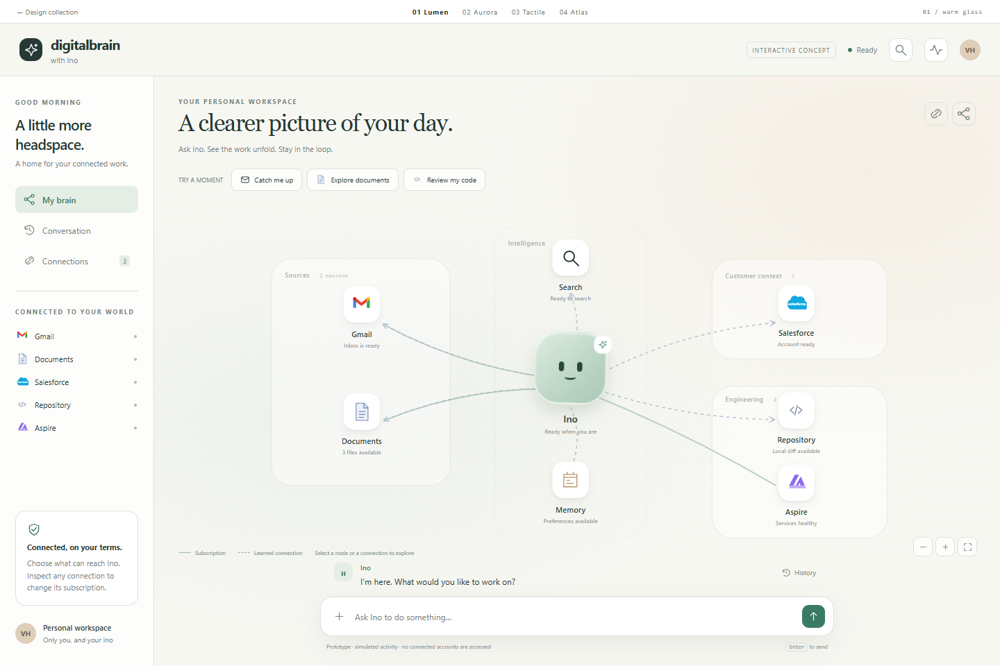
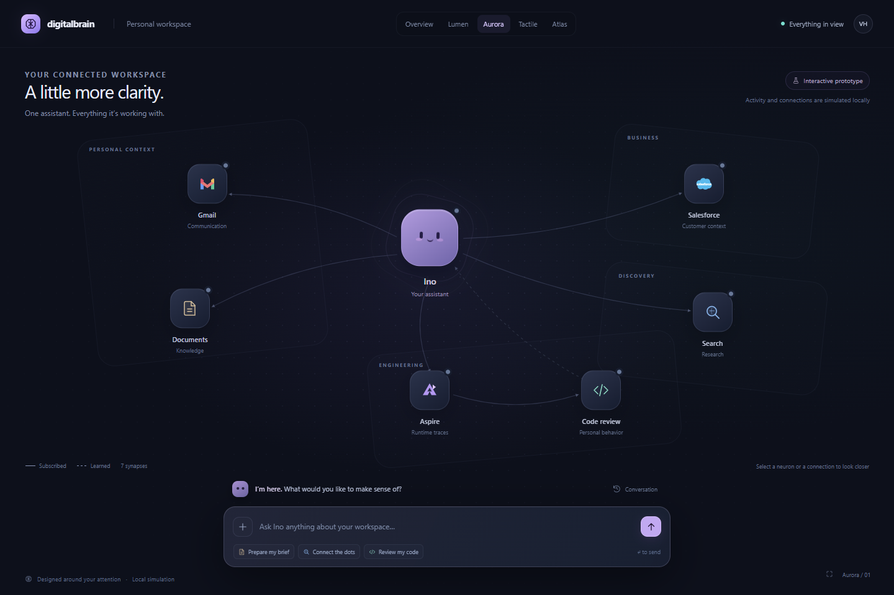
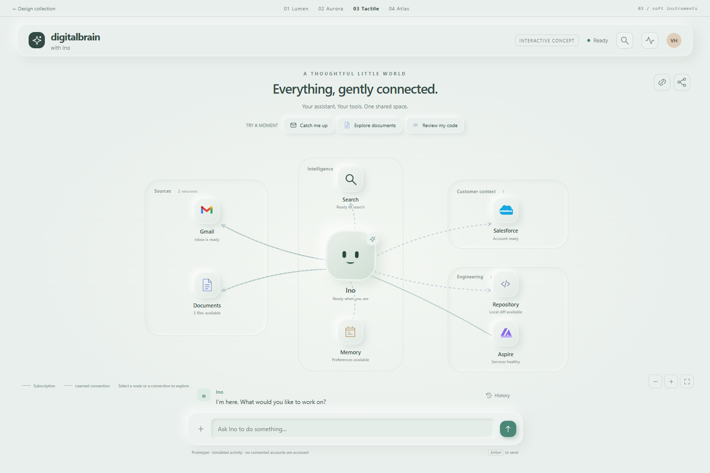
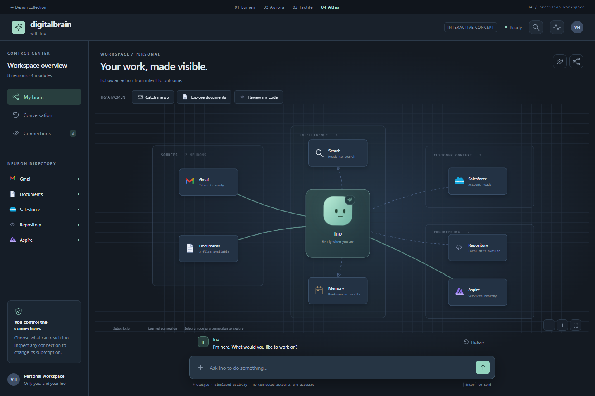

Explore Lumen ↗A calm, luminous home for everyday work. Warm glass, generous space, and a friendly Ino keep a complex system approachable.
Warm glassEveryday clarityQuiet presence
A NEW HOME FOR INO
Four ways to bring your assistant, your tools, and the work between them into one space. Open a concept, ask Ino, then follow a connection. Every option is an interactive HTML prototype.

Explore Lumen ↗A calm, luminous home for everyday work. Warm glass, generous space, and a friendly Ino keep a complex system approachable.

Explore Aurora ↗A living constellation of your work. Midnight glass and restrained color make the assistant feel present in a spacious, dimensional world.

Explore Tactile ↗A thoughtful little world of soft instruments. Sculpted tiles, porcelain surfaces, and gentle movement give Ino a more tangible home.

Explore Atlas ↗A focused workspace for following real execution. Compact cards, clear module boundaries, and readable connections bring every step into reach.
ONE INTERACTION MODEL
The graph is the home screen. Ino is present when the app opens, the composer is always within reach, and the latest response stays compact. Open history whenever you need the full conversation.
These concepts simulate example activity. The production screen should animate observed work and display connection or stale-data states honestly.
Try “Review my local diff”, “Explore documents”, or “Catch me up”. Ino changes from ready to working while a short progress line explains the current action.
Provider icons identify neurons. Module regions give them a home. Directional pulses show which signal is moving where; reading and searching have visible, named steps.
A neuron reveals its current action, information, and connections. A synapse reveals its source, destination, signal contract, last delivery, and payload.
Open a Bound subscription, unsubscribe, then simulate a source event. The edge disappears and the event no longer reaches Ino. Subscribe again to restore delivery.
RECOMMENDED FLUTTER FOUNDATION
Maintained, adaptable controls inside our own UI kit. A state-driven persona. A dedicated graph renderer. The existing chat transport and source-owned subscription model stay behind those presentation components.
Read the kit comparison ↗